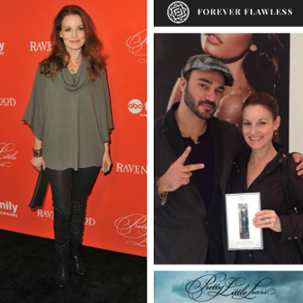
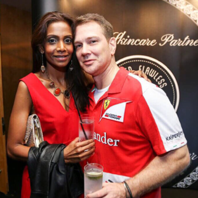
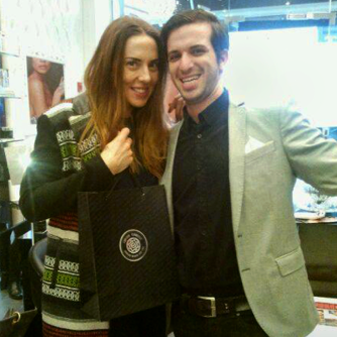

Celebrities
Celebrities who love our products, visited a Forever Flawless Boutique, and
who indulge in diamond microdermabrasion treatments based on spa diamond tip equipment.




* The above celebrities have been documented for having diamond and other gem facial treatments, not necessarily Forever Flawless
Have a Flawless Day!